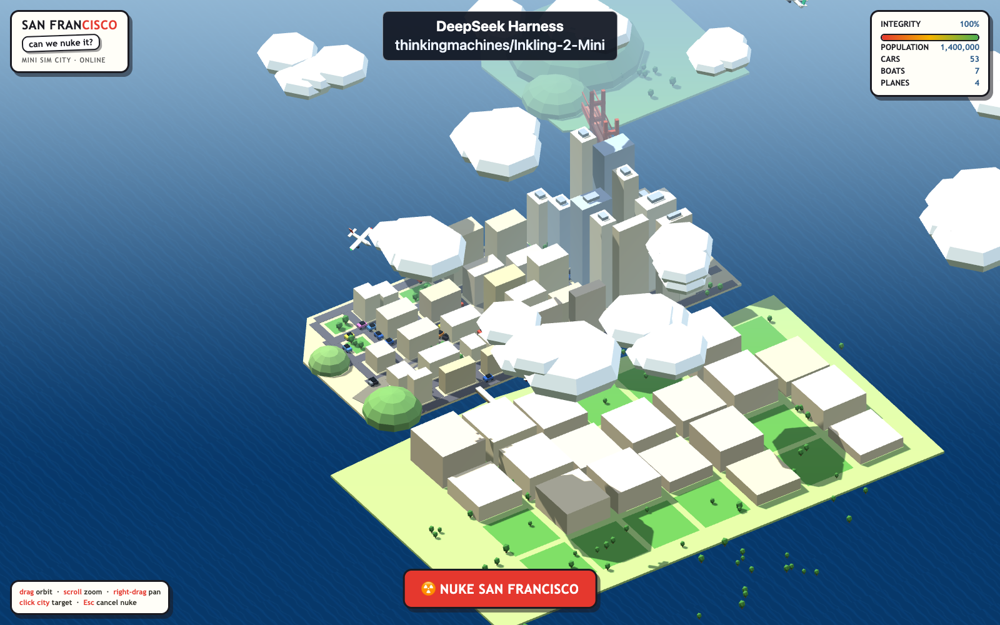
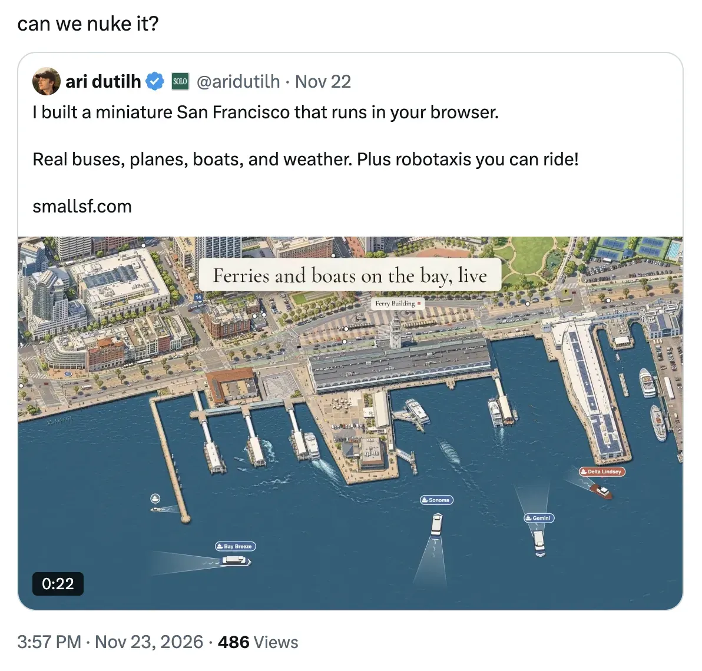
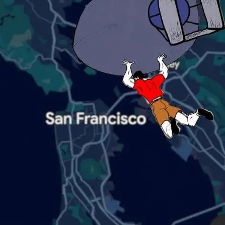

Nuke SF Bench


Harness benchmarks
Single RTX 3090 at 220 W · 196,608-token context · high reasoning effort.
| Model | Harness | Engine | Prompt cache hit | Fresh build | Calls | Output tokens | Active tok/s |
|---|---|---|---|---|---|---|---|
| Inkling 2 Mini | OMP | custom vLLM | 84.6%² | 20m 42s | 64 | 90,327 | 115.9 |
| Inkling 2 Mini | DeepSeek Harness | custom vLLM | 95.4%² | 25m 18s | 76 | 134,798 | 113.9 |
| Qwen3.8 Flash Next | OMP | Strata | 0.0% (off)¹ | 2h 16m 26s¹ | 123 | 93,735 | 58.6 |
| Qwen3.8 Flash Next | DeepSeek Harness | Strata | 96.2% | 35m 23s | 66 | 89,878 | 59.4 |
¹ OMP Flash Next on Strata · 87.8% cache hit · 47m 26s measured replay
With six prompt checkpoints, Strata reused 10,233,880 of 11,661,231 input tokens across the 123 replayed requests. Total server time fell from 2h 8m 12s to 42m 20s (3.03×). Decode ran at 56.6 tok/s and produced 92,069 tokens. The replay used recorded tool results.
A fresh cached build would take roughly 51 minutes if it spent the same 8m 14s outside server requests as the original build. That figure is an estimate.
Strata percentages divide reused prompt tokens by total prompt tokens across each run. ² Inkling percentages are vLLM’s endpoint-wide prefix-cache readings immediately after each build. During the OMP build the endpoint received 65 requests, of which 64 came from the recorded session.
Fresh build time includes tools and browser checks. Active tok/s measures generation after the first token. Inkling used the official mixed-precision checkpoint with custom vLLM and DSpark 7. Flash Next used UD-IQ4_XS with Strata and MTP 4.
Original prompt
[Image #1, 1192x1140] create a game where we have the whole sf map in 3d isometric sim city style, put it in 3js, give clouds and active cars and boats and planes. then we will have the ability to nuke it like the nuke sf meme [Image #2, 447x447]



